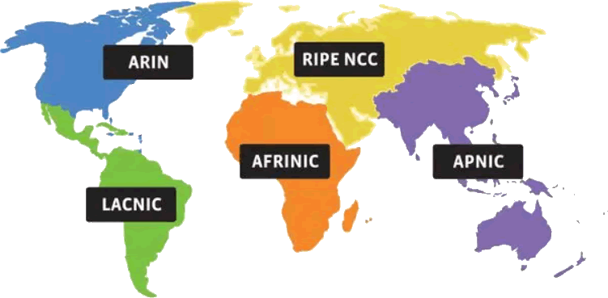
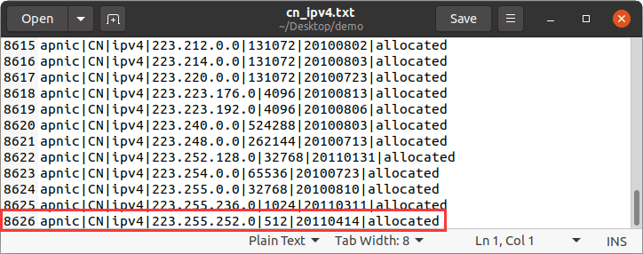

中国一共有多少IP地址？
为了照顾初学者，咱们先来科普一下 IP 地址的概念。
IP 地址是 Internet Protocol Address 的缩写，译为“网际协议地址”。现阶段 IP 地址有两个版本，分别是 IPv4 和 IPv6。
目前大部分软件仍在使用 IPv4 地址，但是 IPv6 地址也正在被人们接受，尤其是在教育网中，IPv6 已经大量使用。
IPv4 地址由 32 位二进制数组成，IPv4 地址一共约有 43 亿个，这看似是一个很大的数字，但对于全世界 70 多亿人而言，IPv4 地址简直少得可怜。其实早在 2021 年 IPv4 地址就已经枯竭了，尽管人们想出了各种方法来缓解 IPv4 资源枯竭的颓势，但 IPv4 资源耗尽已经是一个不争的事实。
IPv6 地址的诞生就是为了彻底解决 IPv4 资源耗尽的问题。IPv6 地址由 128 位二进制数组成，数量庞大到可以为地球上的每一粒沙子都分配一个 IPv6 地址。在不久的将来，IPv6 会取代 IPv4，后者终有一天会埋没在历史的长河里。
在因特网上进行通信时，必须要知道对方的 IP 地址，发送的数据包中也会附带通信双方的 IP 地址。数据包发送到路由器以后，路由器会根据 IP 地址找到对方的地理位置，完成一次数据的传递。
全世界的 IP 地址由五大区域性机构管理，咱们国家的 IP 地址由亚太地区的 APNIC（亚太互联网络信息中心）负责分配管理。
五大 IP 地址管理机构：
APNIC 官网上有一份公开的文档，记录着 APNIC 管理分配的所有 IP 地址信息，此文档每天都会更新，通过下面这个 URL 可以找到它：
统计中国一共有多少个 IP 地址，就需要从文档将类型为 ipv4、国家代码为 CN、TW、HK 和 MO 的 IP 地址分配信息筛选出来，然后将它们的长度叠加到一起。
筛选指定的 IP 地址信息，可以借助 Linux 环境中的 cat 命令实现。以中国大陆为例，将文档完整地下载下来，然后执行如下命令：
也就是说，截止到 2022 年 6 月 13 日，中国大陆一共分配了 8626 个 IP 网段。
在此基础上，统计这些网段中包含的 IP 地址的数量，可以编写一个 Python 脚本来实现：
采用同样的方法，可以分别计算出中国台湾、香港、澳门这三个地区的 IP 地址数量，分别是：
由此，我们可以计算出中国一共有 391983104 个 IP 地址，约占整个 IP 地址数量的 9.1%。
的确，即便是给 1 个人分配 1 个 IP 地址，4 亿 IP 地址也是远远不够的。
为了缓解 IPv4 资源匮乏的窘境，人们想出了一种方法，大体上讲就是：将 IP 地址分为公网 IP 和私网 IP，不同局域网里的机器可以使用相同的私网 IP 地址，如果局域网中的机器想访问互联网（公网），就必须先将私网 IP 地址转换为公网 IP 地址，这种技术称为 NAT 技术。
关于 NAT 技术，以及私网/公网 IP 的转换，我已经在《网络通信 mini 电子书》中进行了详细讲解。
IP 地址是 Internet Protocol Address 的缩写，译为“网际协议地址”。现阶段 IP 地址有两个版本，分别是 IPv4 和 IPv6。
目前大部分软件仍在使用 IPv4 地址，但是 IPv6 地址也正在被人们接受，尤其是在教育网中，IPv6 已经大量使用。
IPv4 地址由 32 位二进制数组成，IPv4 地址一共约有 43 亿个，这看似是一个很大的数字，但对于全世界 70 多亿人而言，IPv4 地址简直少得可怜。其实早在 2021 年 IPv4 地址就已经枯竭了，尽管人们想出了各种方法来缓解 IPv4 资源枯竭的颓势，但 IPv4 资源耗尽已经是一个不争的事实。
IPv6 地址的诞生就是为了彻底解决 IPv4 资源耗尽的问题。IPv6 地址由 128 位二进制数组成，数量庞大到可以为地球上的每一粒沙子都分配一个 IPv6 地址。在不久的将来，IPv6 会取代 IPv4，后者终有一天会埋没在历史的长河里。
在因特网上进行通信时，必须要知道对方的 IP 地址，发送的数据包中也会附带通信双方的 IP 地址。数据包发送到路由器以后，路由器会根据 IP 地址找到对方的地理位置，完成一次数据的传递。
中国有多少 IP 地址？
这里我们要讨论的是资源枯竭的 IPv4 地址（简称 IP 地址），而不是 IPv6 地址。全世界的 IP 地址由五大区域性机构管理，咱们国家的 IP 地址由亚太地区的 APNIC（亚太互联网络信息中心）负责分配管理。

图1：世界五大互联网注册机构
图1：世界五大互联网注册机构
五大 IP 地址管理机构：
- ARIN：美洲互联网地址注册管理机构；
- LACNIC：拉丁美洲和加勒比地区互联网地址注册管理机构；
- RIPE NCC：欧洲 IP 资源网络协调中心；
- AFRINIC：非洲互联网信息中心；
- APNIC：亚太互联网信息中心。
APNIC 官网上有一份公开的文档，记录着 APNIC 管理分配的所有 IP 地址信息，此文档每天都会更新，通过下面这个 URL 可以找到它：
http://ftp.apnic.net/apnic/stats/apnic/delegated-apnic-latest
打开文档后，可以看到罗列着的大量 IP 地址信息，比如：...... apnic|AU|ipv4|1.0.0.0|256|20110811|assigned apnic|CN|ipv4|1.0.1.0|256|20110414|allocated apnic|CN|ipv4|1.0.2.0|512|20110414|allocated apnic|AU|ipv4|1.0.4.0|1024|20110412|allocated apnic|CN|ipv4|1.0.8.0|2048|20110412|allocated ......每一行用
|分隔了 7 列信息，它们的含义分别是：
- 注册机构：比如 apnic、arin 等。
- 国家代码：ISO-3166 定义的两位国家或地区代码，比如中国大陆为 CN，中国台湾为 TW，中国香港为 HK，中国澳门为 MO。
- 类型：有 asn（自治系统编号）、ipv4 和 ipv6 三种，这里我们只关注 ipv4 地址。
- 起始位：第一个 asn 编号或者 ip 地址。
- 长度：从起始位开始，申请分配的编号或地址数量。
- 分配日期：国家或地区向 APNIC 申请的日期。
-
状态：有 allocated 和 assigned 两种，都是已分配的意思：
- allocated 表示已将 IP 地址范围分配给某个互联网注册中心，由该注册中心进行分配管理；
- assigned 表示将 IP 地址范围分配给特定的 ISP 组织（比如中国电信、联通、移动等）或者用户。
统计中国一共有多少个 IP 地址，就需要从文档将类型为 ipv4、国家代码为 CN、TW、HK 和 MO 的 IP 地址分配信息筛选出来，然后将它们的长度叠加到一起。
筛选指定的 IP 地址信息，可以借助 Linux 环境中的 cat 命令实现。以中国大陆为例，将文档完整地下载下来，然后执行如下命令：
cat delegated-apnic-latest | grep "CN|ipv4" > cn_ipv4.txt执行后，会生成一个名为 cn_ipv4.txt 的文件，内部全部都是国家代码为 CN、类型为 ipv4 的 IP 地址信息，总共有 8626 条：

图2：中国大陆 IP 地址信息
图2：中国大陆 IP 地址信息
也就是说，截止到 2022 年 6 月 13 日，中国大陆一共分配了 8626 个 IP 网段。
在此基础上，统计这些网段中包含的 IP 地址的数量，可以编写一个 Python 脚本来实现：
import sys
total = 0
with open(sys.argv[1]) as fp:
while True:
line = fp.readline()
if line:
fields = line.split('|')
num = int(fields[4])
total += num
else:
break
print('total: %d' % total)
执行此 Python 脚本程序，将 cn_ipv4.txt 作为参数传入，执行结果为：
$ python3 cn-ipv4-num.py cn_ipv4.txt
total: 343382272
采用同样的方法，可以分别计算出中国台湾、香港、澳门这三个地区的 IP 地址数量，分别是：
- 中国台湾：35693312
- 中国香港：12570880
- 中国澳门：336640
由此，我们可以计算出中国一共有 391983104 个 IP 地址，约占整个 IP 地址数量的 9.1%。
总结
可能有读者会问，我国有 14 亿人口，而且每个人可能还有手机、电脑、平板等多台网络设备，区区不到 4 亿的 IP 地址怎么够分呢？的确，即便是给 1 个人分配 1 个 IP 地址，4 亿 IP 地址也是远远不够的。
为了缓解 IPv4 资源匮乏的窘境，人们想出了一种方法，大体上讲就是：将 IP 地址分为公网 IP 和私网 IP，不同局域网里的机器可以使用相同的私网 IP 地址，如果局域网中的机器想访问互联网（公网），就必须先将私网 IP 地址转换为公网 IP 地址，这种技术称为 NAT 技术。
关于 NAT 技术，以及私网/公网 IP 的转换，我已经在《网络通信 mini 电子书》中进行了详细讲解。
关注公众号「站长严长生」，在手机上阅读所有教程，随时随地都能学习。内含一款搜索神器，免费下载全网书籍和视频。

微信扫码关注公众号